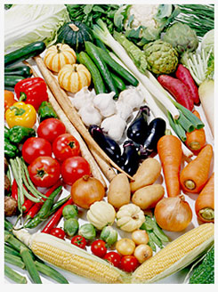

“希望能夠方便地吃上美味且健康的食品”
為了滿足客戶諸如此類的心聲，我們特地設立了オイシックス株式會社（服務名稱： 天家蔬菜。自公司成立以來，我們始終致力於從食品的安全性、營養價值、價格以及美味等方面著手，為客戶的日常飲食生活提供全面的、高質的食品。
與此同時，我們註重的是顧客在品嘗的時候的最佳美味度而不是采摘和生產的時候的，加之我們對於配送過程中的溫控管理及包裝進行嚴格監控和不斷研究改善，使得消費者能夠品嘗到最美味的食品。
天家蔬菜的成長是建立在消費者滿足度的不斷上升的基礎上的。並不是單純地將生產者、銷售廠家的意見硬性強加在消費者身上，而是更多地聽取顧客的意見並對於自己的服務不斷加以改善。